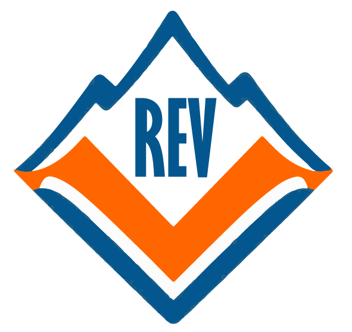

Municipalidad de Valle del Sol
Informe Técnico Integral
Arquitectura, Patrones y Ecosistema de Microservicios
Problema: La Municipalidad de Valle del Sol requiere coordinar emergencias (incendios forestales, incidentes urbanos y estructurales) con información dispersa, picos de demanda impredecibles y necesidad de respuesta rápida en terreno.
Solución: REV (*Red de Emergencia Valle*) es una plataforma de misión crítica que integra despacho municipal, brigadas y ciudadanía en un ecosistema de microservicios con interfaz web moderna.
Tecnologías: React 18 + Vite (frontend), Spring Boot 4 + Spring Cloud (backend), PostgreSQL/PostGIS, Keycloak, Eureka, Resilience4j, Docker.
Arquitectura: API Gateway perimetral, BFF de agregación, tres microservicios de dominio con base de datos independiente, descubrimiento de servicios y autenticación JWT centralizada.
Valor: Visión unificada del despacho, priorización por riesgo territorial, asignación de recursos, portal ciudadano sin registro y continuidad operativa parcial ante fallas de servicios secundarios.
Este informe documenta la arquitectura implementada, los patrones de diseño verificados en el repositorio rev-fullstack, la estrategia de branching, las prácticas de seguridad y observabilidad, y la experiencia de usuario del dashboard operacional. Toda afirmación técnica está respaldada por código, configuración o documentación existente en el monorepo.
| Dimensión | Estado en REV |
|---|---|
| Microservicios de negocio | 3 (ms-incidentes, ms-zonas-riesgo, ms-recursos) |
| BFF + Gateway | bff-rev :8085 · api-gateway :8080 |
| Identidad | Keycloak realm rev · roles Despachador, Brigadista, Admin |
| Resiliencia | Circuit Breaker Resilience4j en BFF + flag degraded |
| Frontend | SPA React — Despacho, Incidentes, Zonas, Recursos, Portal, Inicio |
REV surge como respuesta institucional ante la complejidad creciente de la gestión de emergencias en el territorio municipal de Valle del Sol.
La comuna enfrenta riesgos recurrentes — incendios forestales en zona metropolitana, incidentes urbanos y emergencias estructurales en la costa — que exigen coordinación entre despacho, brigadas y ciudadanía. Los modelos monolíticos tradicionales dificultan escalar ante picos de demanda y degradan la experiencia del operador bajo estrés operacional.
| Tipo | Descripción |
|---|---|
| General | Implementar una plataforma de gestión de emergencias basada en microservicios, con interfaz de despacho y portal ciudadano. |
| Específico 1 | Gestionar ciclo de vida de incidentes con reglas de transición de estado (ms-incidentes). |
| Específico 2 | Clasificar riesgo territorial con PostGIS y evaluación por coordenadas (ms-zonas-riesgo). |
| Específico 3 | Administrar y asignar brigadas, vehículos y herramientas (ms-recursos). |
| Específico 4 | Agregar datos en BFF con tolerancia a fallos para el dashboard React. |
Alcance: Monorepo Maven + frontend NPM, despliegue local con Docker Compose, autenticación Keycloak, documentación y pruebas en flujos críticos.
Limitaciones: Adaptador climático simulado (FakeWeatherAdapter); seguridad de roles aplicada en Gateway (no en anotaciones dentro de cada MS); transiciones de estado desde UI limitadas a creación y asignación de recursos; sin ELK/Prometheus en producción actual.
REV conecta al despacho municipal, las brigadas en terreno y la ciudadanía bajo el lema «Conectividad que salva vidas».
Plataforma de misión crítica para registrar, priorizar y coordinar emergencias. Capacidades verificadas en UI: dashboard operacional, listado y detalle de incidentes, mapa de zonas de riesgo, gestión de recursos, página de inicio con KPIs, portal público de reporte (/portal) y autenticación vía login.
| Perfil | Descripción | Funciones principales |
|---|---|---|
| Administrador | Supervisión y configuración de identidad | Acceso al panel; enlace a consola Keycloak (Sidebar — rol Admin); mismas capacidades operativas que despachador en UI actual |
| Despachador | Operador del centro de emergencias | Dashboard, incidentes, zonas, recursos, creación de incidentes, asignación de recursos (canManageIncidents) |
| Brigadista | Personal de terreno | Acceso autenticado al panel (rol validado en Gateway); consulta operacional según permisos frontend |
| Ciudadano | Vecino del valle | Reporte vía portal público (POST /api/public/incidentes) sin autenticación |
Capítulo central del informe. Describe la instancia concreta desplegada, no un catálogo teórico de patrones.
Estilo microservicios en monorepo Maven (rev-parent) con dominios businessdomain e infraestructuredomain. Comunicación síncrona REST; descubrimiento vía Eureka; perímetro con API Gateway; agregación en BFF; persistencia database per service.
| Componente | Puerto | Rol | Ruta en repo |
|---|---|---|---|
| Frontend React | 5173 | SPA despacho + portal | frontend/rev-dashboard/ |
| API Gateway | 8080 | Enrutamiento, filtro JWT | infraestructuredomain/api-gateway/ |
| BFF-REV | 8085 | Facade, agregación dashboard | infraestructuredomain/bff-rev/ |
| ms-incidentes | 8081 | Ciclo de vida incidentes | businessdomain/ms-incidentes/ |
| ms-zonas-riesgo | 8082 | Zonas y riesgo territorial | businessdomain/ms-zonas-riesgo/ |
| ms-recursos | 8083 | Brigadas, vehículos, asignaciones | businessdomain/ms-recursos/ |
| Keycloak Adapter | 8088 | Login, validación JWT, roles | infraestructuredomain/keycloak-adapter/ |
| Eureka Server | 8761 | Service discovery | infraestructuredomain/eureka-server/ |
| Spring Boot Admin | 8099 | Monitorización centralizada | infraestructuredomain/spring-boot-admin/ |
| Keycloak | 8090 | IAM — realm rev | docker/keycloak/rev-realm.json |
| Mecanismo | Implementación REV |
|---|---|
| REST | Controllers Spring en MS; WebClient reactivo en BFF hacia MS-INCIDENTES, MS-ZONAS-RIESGO, MS-RECURSOS |
| Discovery | Eureka — rutas Gateway lb://BFF-REV, lb://KEYCLOAK-ADAPTER |
| JWT | Keycloak emite token; Gateway AuthenticationFilter valida vía adapter /roles |
| Routing | /api/public/** sin JWT · /api/** con filtro · /auth/** → adapter |
Distinción académica: la arquitectura es la instancia concreta de REV; el arquetipo es el estilo organizacional reutilizable; el patrón resuelve un problema puntual dentro de ese estilo.
| Nivel | En REV | Ejemplo verificable |
|---|---|---|
| Arquitectura | Microservicios + Gateway + BFF + 3 BD | docker-compose.yml, diagrama cap. 3 |
| Arquetipo | MS Spring Cloud por capas; hexagonal parcial | Estructura controller/service/repository |
| Patrón | Factory, State, Facade, etc. | IncidentStateFactory, DashboardFacadeService |
Cada MS de negocio replica la misma organización:
| Capa | Paquete | Ejemplo (ms-incidentes) |
|---|---|---|
| Controller | controller/ | IncidenteController |
| Service | service/ | IncidenteService |
| Repository | repository/ | IncidenteRepository |
| Entity | entity/ | Incidente, TransicionEstado |
| DTO | dto/ | IncidenteRequest, IncidenteResponse |
| Exception | exception/ | BusinessRuleException, ApiExceptionHandler |
Infraestructura común en businessdomain/pom.xml: Eureka client, Actuator, Flyway, springdoc-openapi, PostgreSQL.
rev-microservice-archetypeRuta: archetypes/rev-microservice-archetype/. Genera un MS con @EnableDiscoveryClient, application.properties base y estructura alineada al monorepo.
mvn archetype:generate \ -DarchetypeGroupId=cl.duocuc.rev \ -DarchetypeArtifactId=rev-microservice-archetype \ -DartifactId=ms-nuevo
Figura 1
Estructura del arquetipo Maven REV
Capturar: árbol de archetypes/rev-microservice-archetype/src/main/resources/ mostrando archetype-metadata.xml y archetype-resources/.
Interpretación: estandariza la creación de nuevos microservicios compatibles con Eureka y Actuator.
Conclusión: evidencia de arquetipo Maven custom requerido en el encargo EVA2.
| Concepto | Archivo |
|---|---|
| Puerto | port/WeatherDataPort.java |
| Adaptador | adapter/FakeWeatherAdapter.java |
| Orquestación | service/ZonaService.java inyecta el puerto |
Patrones GoF y de conveniencia Spring verificados en código. Formato: objetivo → problema → ubicación → beneficio → evidencia.
IncidentStateFactory| Aspecto | Detalle |
|---|---|
| Objetivo | Resolver el handler de estado según EstadoIncidente actual |
| Problema | Evitar switch dispersos al validar transiciones |
| Ubicación | ms-incidentes/.../state/IncidentStateFactory.java |
| Beneficio | Registro automático vía Spring (List<IncidentStateHandler>) en EnumMap |
@Component
public class IncidentStateFactory {
public void validarTransicion(Incidente incidente, EstadoIncidente destino) {
IncidentStateHandler handler = handlers.get(incidente.getEstado());
handler.validarTransicion(incidente, destino);
}
}
Figura 2
IncidentStateFactory en IDE
Captura del factory y handlers registrados. Conclusión: patrón Factory Method aplicado al dominio de incidentes.
| Clase | Estado | Regla destacada |
|---|---|---|
ReportadoState | REPORTADO | → EN_PROGRESO requiere georreferenciación (requireGeo) |
EnProgresoState | EN_PROGRESO | Transiciones hacia CONTROLADO / ESCALADO |
ControladoState | CONTROLADO | Avance hacia cierre |
EscaladoState | ESCALADO | Prioridad operacional |
Base común: BaseIncidentState.java — método requireGeo lanza BusinessRuleException si faltan coordenadas.
Figura 3
Jerarquía State — ReportadoState, EnProgresoState, ControladoState
Captura del paquete state/. Test: IncidentStateFactoryTest.java.
| Aspecto | Detalle |
|---|---|
| Puerto | WeatherDataPort.obtenerCondiciones(lat, lng) |
| Adaptador | FakeWeatherAdapter — datos determinísticos, fuente FAKE_WEATHER_ADAPTER |
| Beneficio | Permite sustituir por API meteorológica real sin cambiar ZonaService |
Figura 4
WeatherDataPort y FakeWeatherAdapter
Captura de puerto + adaptador en ms-zonas-riesgo.
DashboardFacadeServiceAgrega incidente + zona de riesgo + recursos en un único DashboardResponse con flag degraded.
return DashboardResponse.builder()
.incidente(incidente)
.zonaRiesgo(zonaRiesgo)
.recursos(recursosResult.recursos())
.degraded(recursosResult.degraded())
.build();
Figura 5
DashboardFacadeService — método construirDashboard
Captura del facade en bff-rev con anotaciones @CircuitBreaker.
Interfaces en cada MS: IncidenteRepository, ZonaRepository, BrigadaRepository, etc. Abstraen persistencia PostgreSQL/PostGIS.
Figura 6
Repositorio Spring Data
Ejemplo: IncidenteRepository extends JpaRepository.
@Builder en DTOs del BFF y MS, p. ej. WeatherDataDto.builder(), DashboardResponse.builder(), ZonaRiesgoDto.builder().
Figura 7
DTO con @Builder de Lombok
Captura de clase DTO con anotaciones Lombok.
| Patrón | Problema | Implementación | Ubicación |
|---|---|---|---|
| Microservicios | Acoplamiento monolítico | 3 MS de dominio independientes | businessdomain/ |
| API Gateway | Exponer un único punto de entrada | Spring Cloud Gateway :8080 | api-gateway/application.yml |
| BFF | Adaptar API al frontend | Agregación dashboard y operaciones | bff-rev/ |
| Circuit Breaker | Cascada de fallos | Resilience4j — instancias zonasRiesgo, recursos | DashboardFacadeService + application.properties |
| Service Discovery | Localizar instancias dinámicas | Eureka + lb:// en Gateway y WebClient | eureka-server/ |
| Database per Service | Acoplamiento de datos | 3 PostgreSQL/PostGIS separados | docker-compose.yml |
| Cache Aside | Fallback sin perder contexto | ZonaRiesgoCache en fallback del circuit breaker | bff-rev/.../cache/ZonaRiesgoCache.java |
| JWT Authentication | Identidad distribuida | Keycloak + adapter + filtro Gateway | AuthenticationFilter.java |
resilience4j.circuitbreaker.instances.zonasRiesgo.slidingWindowSize=10 resilience4j.circuitbreaker.instances.zonasRiesgo.failureRateThreshold=50 resilience4j.circuitbreaker.instances.zonasRiesgo.waitDurationInOpenState=5s
Actuator expone circuitbreakers en BFF: management.endpoints.web.exposure.include=health,info,circuitbreakers
Documentado en docs/CONTRIBUTING.md. GitFlow simplificado con dos ramas principales.
| Rama | Propósito |
|---|---|
main | Código estable — demo y entrega. Solo merges desde dev validados |
dev | Desarrollo activo diario |
feature/* | Recomendado para features aisladas (documentado en guías del equipo) |
Commits atómicos: formato [ TIPO ]: descripción — FEAT, FIX, DOCS, INFRA, etc.
CI: .github/workflows/ci.yml dispara en push/PR a main, dev, develop.
Figura 8
Repositorio GitHub — ramas main y dev
Captura de GitHub → Branches. Adjuntar PR de dev → main si existe.
Figura 9
Pull Request de integración
Captura de PR con revisión y checks CI.
main y canaliza el trabajo colaborativo en dev.| Principio | Evidencia en REV |
|---|---|
| SRP / separación de capas | Controller → Service → Repository en cada MS |
| Inyección de dependencias | Constructor injection con Lombok @RequiredArgsConstructor |
| DRY en infraestructura | Parent POM compartido; archetype Maven |
| Nomenclatura | Prefijo ms-, paquetes cl.duocuc.rev.* |
| Validación de esquema | ddl-auto=validate + Flyway migrations |
| Manejo de errores | ApiExceptionHandler, BusinessRuleException |
| Tests | IncidentStateFactoryTest, ZonaServiceTest, tests BFF |
| Documentación | README por módulo; OpenAPI springdoc en MS |
| Frontend modular | Componentes por dominio (inicio/, incidentes/, zonas/) |
rev — roles: Despachador, Brigadista, Adminrev-frontend — flujo password grant (dev) vía adapterJwtService.javaAuthenticationFilter exige Bearer y consulta KEYCLOAK-ADAPTER/roles| Ruta Gateway | JWT | Uso |
|---|---|---|
/api/public/** | No | Portal ciudadano |
/api/** | Sí | Panel despacho |
/auth/** | N/A | Login, roles, refresh |
Nota: Los microservicios de negocio no implementan @PreAuthorize; el perímetro de seguridad está en Gateway + adapter (decisión documentada).
Figura 10
Consola Keycloak — realm rev
Roles, clientes y usuarios de prueba.
Figura 11
AuthenticationFilter — Gateway
Código del filtro JWT en api-gateway.
Figura 12
Configuración JWT — JwtService
Validación JWK Set URI del realm.
| Capacidad | Estado | Evidencia |
|---|---|---|
| Spring Boot Actuator | Implementado | health,info en MS; circuitbreakers en BFF |
| Spring Boot Admin | Implementado | Puerto 8099, @EnableAdminServer |
| Logging explícito | Parcial | Gateway INFO; @Slf4j en filtro y AuthController |
| Métricas Prometheus | No implementado | — |
| Tracing distribuido | No implementado | — |
| Auditoría de negocio | Parcial | Tabla transiciones_estado en ms-incidentes |
Las transiciones de estado de incidentes se persisten en transiciones_estado (Flyway V1), proporcionando trazabilidad del ciclo de vida. El BFF marca respuestas degraded: true cuando un fallback de Circuit Breaker activa, visible en UI como «información parcial».
| Stack | Propósito |
|---|---|
| ELK (Elasticsearch, Logstash, Kibana) | Centralizar logs de 8+ servicios |
| Prometheus + Grafana | Métricas JVM, latencia WebClient, estado CB |
| Grafana Loki | Logs ligero complementario a Prometheus |
| OpenTelemetry | Tracing entre Gateway → BFF → MS |
| Microservicio | BD | Motor | Puerto host |
|---|---|---|---|
| ms-incidentes | rev_incidentes | PostgreSQL 16 | 5432 |
| ms-zonas-riesgo | rev_zonas | PostGIS 16 | 5433 |
| ms-recursos | rev_recursos | PostgreSQL 16 | 5434 |
| Tabla | MS | Campos clave |
|---|---|---|
incidentes | incidentes | id UUID, tipo, estado, lat, lng, descripcion, reportante_uuid |
transiciones_estado | incidentes | incidente_id, estado_anterior, estado_nuevo, created_at |
zonas | zonas | nombre, nivel_riesgo, min/max lat/lng |
condiciones_climaticas | zonas | zona_id, temperatura, humedad, viento |
brigadas | recursos | nombre, capacidad, estado |
vehiculos | recursos | patente, tipo, estado |
asignaciones | recursos | incidente_id UUID, brigada_id, vehiculo_id, activa |
Nota: la referencia incidente_id en asignaciones es UUID lógico cross-service, no FK entre bases de datos.
Figura 13
Flyway migrations y esquema PostgreSQL
Captura de db/migration/V1__*.sql o cliente SQL conectado a rev_incidentes.
| Token | Valor | Uso |
|---|---|---|
--rev-bg | #07111F | Fondo principal |
--rev-surface | #142C4E | Tarjetas y paneles |
--rev-orange | #F97316 | Acento institucional, CTAs |
--rev-text-secondary | #A7B4C7 | Texto de apoyo |
| Tipografía | Inter, Segoe UI | theme.css |
| Módulo | Ruta | Función UX |
|---|---|---|
| Inicio | /inicio | Hero + KPIs + panorama + prioridades + showcase REV |
| Despacho | / | Tabla operacional del día, tiles zonas/recursos |
| Incidentes | /incidentes | Filtros, vista cards/tabla, rail de distribución |
| Zonas | /zonas | Mapa Leaflet + listado + riesgo |
| Recursos | /recursos | Brigadas, vehículos, herramientas |
| Portal | /portal | Reporte ciudadano público |
theme.css.Figura 14
Dashboard Despacho
Captura pantalla completa con KPIs y tabla activos.
Figura 15
Módulo Incidentes y Zonas
Vista cards + mapa de riesgo.
Figura 16
Portal ciudadano
Hero + formulario reporte público.
Galería de capturas requeridas para evaluación EVA2. Insertar imágenes reales reemplazando cada placeholder.
| Figura | Captura requerida | Análisis esperado |
|---|---|---|
| 1–7 | Patrones de diseño (cap. 5) | Código fuente en IDE |
| 8–9 | GitHub branching | main, dev, PR |
| 10–12 | Seguridad Keycloak + JWT | Realm, filtro, adapter |
| 13 | Base de datos | Flyway / PostgreSQL |
| 14–16 | Frontend UX | Pantallas operativas |
| 17 | Eureka Dashboard | Instancias registradas :8761 |
| 18 | Spring Boot Admin | Health de microservicios :8099 |
| 19 | Swagger / OpenAPI | Documentación MS incidentes |
| 20 | Docker Compose | docker compose ps servicios activos |
Figura 17
Eureka Service Discovery
Todas las instancias UP: MS-INCIDENTES, MS-ZONAS-RIESGO, MS-RECURSOS, BFF-REV, api-gateway, KEYCLOAK-ADAPTER.
Figura 18
Spring Boot Admin
Monitorización centralizada de actuators.
Figura 19
Swagger UI — ms-incidentes
Endpoints REST documentados con springdoc.
Figura 20
Docker Compose — stack REV
PostgreSQL ×3, Keycloak, Eureka, MS, BFF, Gateway.
REV demuestra dominio de arquitectura de microservicios con evidencia verificable: monorepo Maven estructurado, tres bounded contexts con persistencia independiente, BFF resiliente, Gateway con JWT, descubrimiento Eureka y frontend React alineado al negocio municipal.
FakeWeatherAdapter.La estrategia main / dev, commits atómicos y documentación en docs/ sostienen el trabajo grupal exigido en EVA2, facilitando defensa oral individual con trazabilidad al código.
Síntesis final: REV es una plataforma de emergencias municipal implementada con stack moderno, patrones documentados y evidencia en repositorio — apta para auditoría técnica académica y evolución hacia producción institucional.